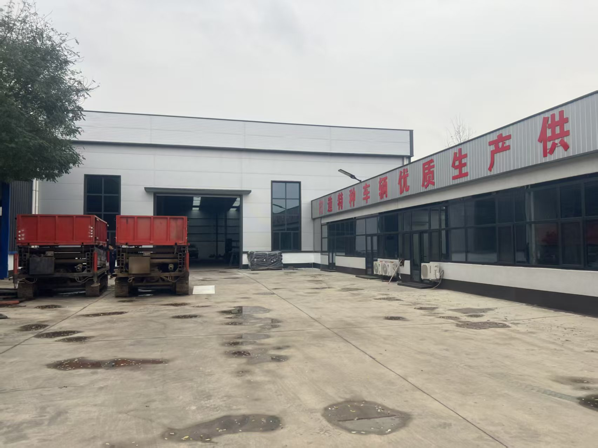

Technical Guide • SIZHOU ZHONGJUN
SIZHOU ZHONGJUN Equipment Catalog
Core Machinery, Carriers & Genuine Parts
Click any product card below to inspect full technical specifications and submit a direct factory inquiry.
About Our Factory
Hebei Sizhou Exploration Machinery
Located in Shijiazhuang, Hebei Province, Hebei Sizhou Exploration Machinery is the proud manufacturer behind the SIZHOU ZHONGJUN brand. We integrate R&D, precision CNC fabrication, hydraulic system assembly, and global export logistics.
Whether you require deep geological exploration drilling rigs (800/1200/1800), custom-chassis tracked carriers, undercarriage components, drilling tools, or intelligent remote lawn mowers, our engineering team delivers reliable machinery built for harsh working environments.
40+
Export Countries
100%
Factory Pre-Delivery Testing
OEM/ODM
Custom Power & Chassis
24/7
Technical Support

Technical Insights & Field Guides
SIZHOU ZHONGJUN Engineering Blog
Select any technical article below to read detailed maintenance guides and machinery selection tips directly on this page.
Direct Factory Inquiry
Contact SIZHOU ZHONGJUN
Reach out directly for factory pricing, technical datasheets, CIF shipping quotes, or dealership opportunities.
Company & Brand
Hebei Sizhou Exploration Machinery (SIZHOU ZHONGJUN)
Factory Address
Shijiazhuang, Hebei Province, China
Telephone
WhatsApp Direct